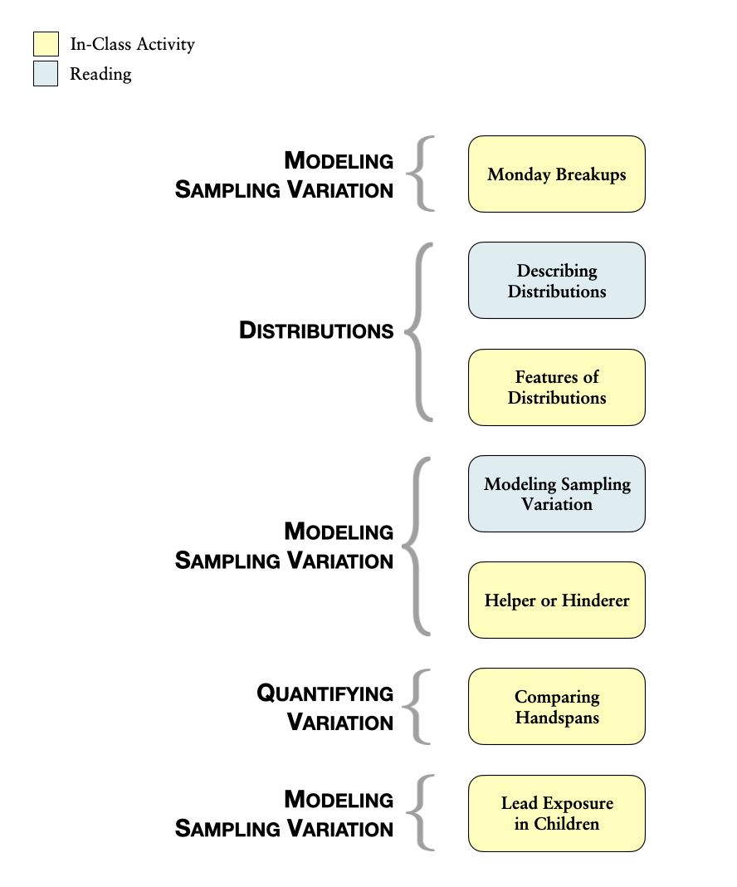

Modeling Sampling Variation
In the course activities and homework assignments, you have been using probability models to generate random outcomes. You have also learned how to use Monte Carlo simulation to generate many data sets from a given model. This is the same kind of process that researchers, scientists, and statisticians engage in when they evaluate (or test) hypotheses about the world.
To illustrate the ideas behind statistical hypothesis testing, consider how you might go about testing a coin for “fairness”. You might have suggested something along the lines of “flip the coin many times and keep track of the number of heads and tails”. Suppose you tossed the coin 100 times, which resulted in 53 heads and 47 tails. Would you say the coin is “unfair”? What if you had obtained 65 heads and 35 tails instead? Now would you say the coin is “unfair”? How about if you had gotten 84 heads and only 16 tails?
The first result of 53 heads and 47 tails probably did not seem that far fetched to you, and you probably would feel at ease saying that the coin that produced such a result is most likely “fair”. On the other hand, the results of 65 heads and 35 tails—and especially 84 heads and 16 tails—likely made you feel uncomfortable about declaring the coin “fair”.
Why is this? It is because you had a mental model of the distribution of heads and tails that you expect when the coin actually IS “fair”. For most people, this mental model encompasses a uniform distribution of the outcomes (e.g., a 50:50 split between heads and tails). If the observed result of the 100 coin flips is compatible with the model of a “fair” coin, you might conclude that the coin is “fair”. For example, the result of 53 heads from 100 flips is very close to the 50:50 split of heads and tails, and it is probably safe to say that a “fair” coin could have produced the set of flips in question. In this case, the data are compatible with the model of “fairness”.
If the observed result deviates from what is expected under the model of a “fair” coin, for example the two results of 65 heads and 84 heads, you might end up rejecting the hypothesis that the coin was “fair”. In these two cases, the data are incompatible (or at least far less compatible) with the model of “fairness”.
One thing you may have realized is that we expect variation in the results just because of chance (randomness). Even if the coin really was “fair”, we do not expect exactly 50 heads every time we carry out 100 flips of the coin. This variation in the number of heads we get each time we carry out 100 flips of the coin is referred to as sampling variation; it is the variation that arises because we are generating different samples from the model (or population). Knowing something about how much sampling variation is expected is how we can judge whether data are compatible or incompatible with the model; it is why you feel 53 heads would be compatible with a “fair” coin, but 65 heads feels less compatible with that model, and 84 heads even less so. Luckily, we can get an indication of how much sampling variation is expected using Monte Carlo simulation.
Simulation Process for Evaluating Hypotheses
The process we will use for evaluating a hypothesis is:
- Create a model that conforms to the hypothesis to be evaluated.
- Use the selected model to generate many, many sets of data (Monte Carlo simulation). The results you collect and pool together from these trials will give a picture of the variation you would expect under the hypothesized model.
- Evaluate whether the results observed in the actual data (not the simulated data) are compatible with the expected results produced from the model. This acts as evidence of support (or nonsupport) for the hypothesis.
To help you remember this process, you can use the more simplistic mnemonic:
- Model
- Simulate
- Evaluate
This may sound like a straight-forward process, but in practice it can actually be quite complex—especially as you are reading research articles and trying to interpret the findings. First off, the model that is selected is often not provided, nor described, explicitly within most research articles. It is often left to the reader to figure out what the assumed model was. At first, this may be quite difficult, but like most tasks, as you gain experience in this course and as you read more research, you find that there are a common set of models that are typically used by researchers.
The model that you use in the Monte Carlo simulation is directly related to the hypothesis you make about a research question. Often researchers explicitly state hypotheses about their research questions. Hypotheses are simply statements of possible explanations for an observed set of data. For example, one possible explanation for the observed set of coin flips is:
The coin used to generate the set of observed coin flips is a “fair” coin; which would produce (in the long run) a uniform distribution of heads and tails.
One complication that you may encounter is that many statisticians and researchers write their hypotheses mathematically. The advantage to writing a hypothesis mathematically is that it explicitly defines the model that will be used in the Monte Carlo simulation. Consider the stated hypothesis that the coin used to generate the set of observed coin flips is a “fair” coin that produces a uniform distribution of heads and tails. Recall that producing a uniform distribution of heads and tails means that heads and tails are equally likely under this model (i.e., a 50:50 split). We could express this hypothesis more mathematically as:
The model produces heads (and tails) with a probability of 0.5.
Symbolically, we would express this hypothesis as:
\[ H_0: \pi_{\mathrm{Heads,~Tails}} = 0.5 \]
The symbol \(H_0\) is common and indicates a hypothesis about a model. Here, \(\pi\) is the Greek letter pi and means “probability” or “proportion”. (Typically in symbolic notation for hypotheses, pi is not the mathematical constant of 3.14.) Statisticians typically use Greek letters to identify probabilities of the outcomes in a model.8 In this hypothesis, we are establishing that the model we are evaluating generates heads (and tails) with a probability of 0.5. Notice how the model is completely defined using the mathematical notation. The hypothesis states that the model has two potential outcomes (heads and tails), and the probability of each is 0.5. Pretty cool, huh?
If this all seems like gibberish to you right now, do not worry about it. You can always write hypotheses descriptively, without resorting to the symbolic notation. Remember, we wrote the EXACT SAME hypothesis three different ways. If you are comfortable with the mathematical symbols, feel free to use it; the mathematical notation acts as a shorthand to quickly state a hypothesis and define the model used. As you read research articles or take other courses, you will see statistical hypotheses stated in many ways, so it is good to understand that there are many ways to express the same thing.
Outline and Goals of Unit 2
The following schematic outlines the course readings, in-class activities, and assignments for Unit 2.

In the readings, course activities, and assignments in Unit 2, you will explore the process of evaluating statistical hypotheses. You will be introduced to several common models that used by researchers and statisticians. You will also use TinkerPlots™ to generate simulated data to study the variation in results that would be expected under these models. Many of these models are directly related to the chance models that you have explored in the course to this point. For example, you should already be able to use TinkerPlots™ to produce results that would be expected from 100 flips of a “fair” coin.
Aside from learning about some of the more common models used in research, you will also learn how to describe and formally quantify the variation in a distribution. This is helpful as we evaluate whether a particular result in observed data is compatible with results produced from the given model. Lastly, you will learn about common misconceptions regarding model evaluation (e.g., we can never say a model produced the data, only that it produces results compatible with the data), and how to use probabilistic language when providing an “answer” to a research question.
Greek vs. Roman Letters
Greek letters are used when the parameters of a model are being described. In contrast, Roman letters are used to describe observed results. For example, go back to the situation in which the observed data consisted of 53 heads and 47 tails from 100 flips of a coin.
Here we would say \(p_{\mathrm{Heads}} = 0.53\). The hypothesis about the model we are evaluating produces heads with a probability of 0.5, so \(\pi_{\mathrm{Heads,~Tails}} = 0.5\).
Rather than use the Roman letters, some statisticians prefer to put a “hat” on the Greek letter to refer to the observed result. For example, \(\hat{\pi}_{\mathrm{Heads}}=0.53\).
In this course we are not as concerned about which notation you use to express the result observed in the actual data. In fact, it might be less confusing if you just write, the observed result is 0.53.↩